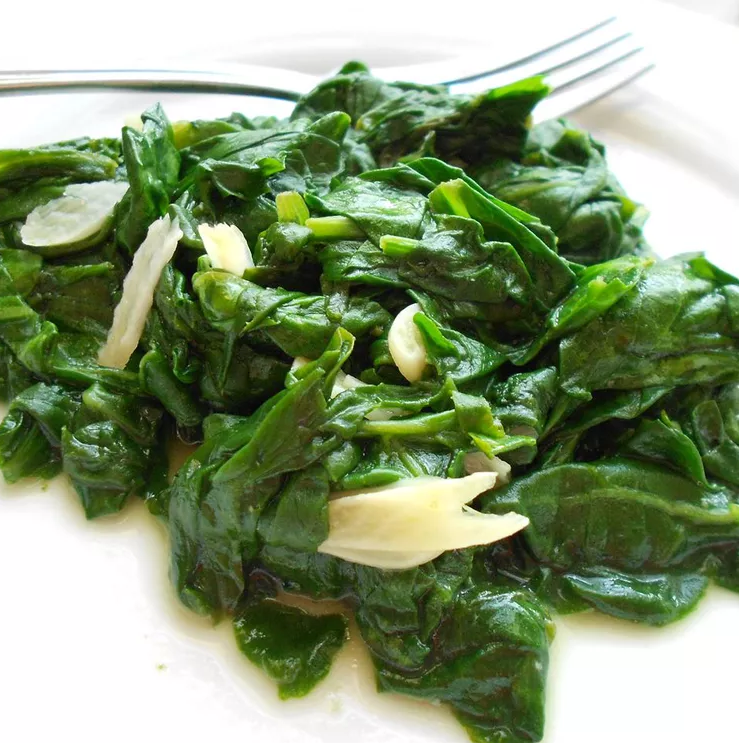

Garlich Spinach

This garlic spinach has all the green flavor you love with tasty garlicky goodness.
Prep Time: 5 mins
Cook Time: 5 mins
Servings: 4 people
INGREDIENTS
- 1 tablespoon unsalted butter
- 6 cloves garlic, thinly sliced
- 2 (10 ounce) bags fresh spinach
- 1/2 medium lemon, juiced
- 1/2 teaspoon garlic salt, or to taste
DIRECTIONS
- Melt butter in a pot over medium heat. Add garlic; cook and stir until fragrant, about 2 minutes. Add spinach, a few handfuls at a time, stirring until wilted before adding more. Stir in lemon juice and season with garlic salt.
Home